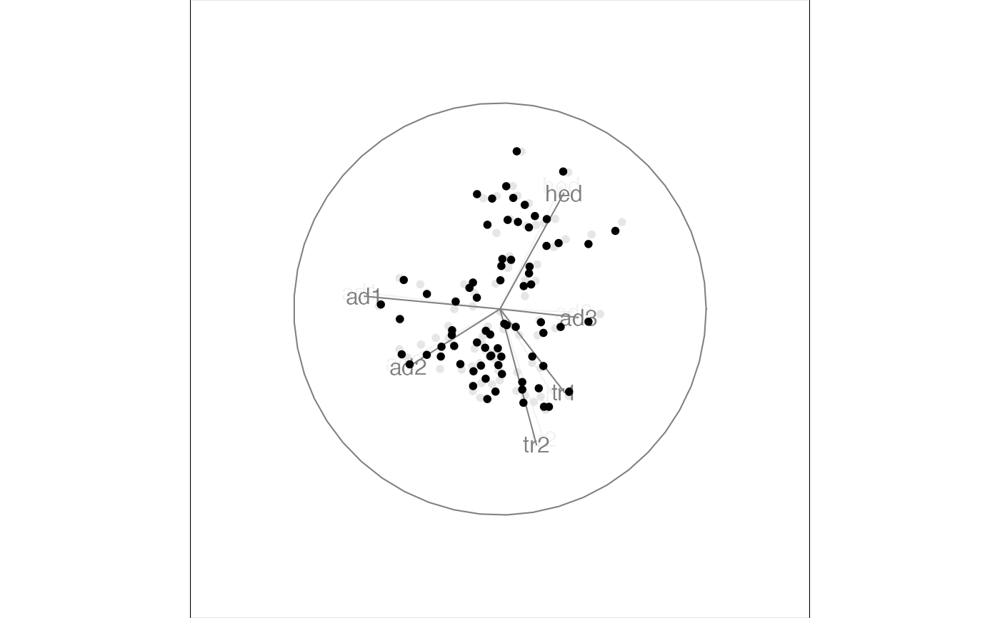

R/search_polish.r
search_polish.RdSearch very locally to find slightly better projections to polish a broader search.
search_polish( current, alpha = 0.5, index, polish_max_tries = 30, cur_index = NA, n_sample = 5, polish_cooling = 1, ... )
| current | the current projection basis |
|---|---|
| alpha | the angle used to search the target basis from the current basis |
| index | index function |
| polish_max_tries | maximum number of iteration before giving up |
| cur_index | the index value of the current basis |
| n_sample | number of samples to generate |
| polish_cooling | percentage of reduction in polish_alpha when no better basis is found |
| ... | other arguments being passed into the |
#>#> Value 0.672 90.2 % better - NEW BASIS #> Value 0.592 67.5 % better - NEW BASIS #> Value 0.763 28.9 % better - NEW BASIS #> Value 0.820 7.5 % better - NEW BASIS #> Value 0.882 7.5 % better - NEW BASIS #> Value 0.890 0.9 % better - NEW BASIS #> Value 0.893 0.3 % better - NEW BASIS #> Value 0.896 0.3 % better - NEW BASIS #> Value 0.898 0.3 % better - NEW BASIS #> Value 0.900 0.2 % better - NEW BASIS #> Value 0.900 0.1 % better #> Value 0.902 0.2 % better - NEW BASIS #> Value 0.903 0.1 % better #> Value 0.903 0.2 % better - NEW BASIS #> Value 0.904 0.0 % better #> Value 0.905 0.1 % better - NEW BASIS #> Value 0.905 0.1 % better #> Value 0.905 0.0 % better #> Value 0.905 0.1 % better #> Value 0.907 0.3 % better - NEW BASIS #> Value 0.909 0.2 % better - NEW BASIS #> Value 0.910 0.1 % better - NEW BASIS #> Value 0.911 0.0 % better #> Value 0.912 0.1 % better - NEW BASIS #> Value 0.912 0.1 % better #> Value 0.912 0.1 % better #> Value 0.912 0.0 % better #> Value 0.912 0.0 % better #> Value 0.912 0.1 % better #> Value 0.913 0.1 % better #> Value 0.912 0.0 % better #> Value 0.912 0.0 % better #> Value 0.912 0.0 % better #> Value 0.912 0.0 % better #> Value 0.912 0.0 % better #> Value 0.912 0.0 % better #> Value 0.912 0.0 % better #> Value 0.912 0.0 % better #> Value 0.912 0.0 % better #> Value 0.912 0.0 % better #> Value 0.912 0.0 % better #> Value 0.912 0.0 % better #> Value 0.912 0.0 % better #> Value 0.912 0.0 % better #> Value 0.912 0.0 % better #> Value 0.912 0.1 % better #> Value 0.912 0.0 % better #> Value 0.912 0.0 % better #> No better bases found after 25 tries. Giving up. #> Final projection: #> 0.073 0.566 #> -0.241 0.254 #> -0.319 0.234 #> -0.620 -0.074 #> 0.094 0.744 #> -0.664 0.032best_proj <- t1[,,dim(t1)[3]] animate_xy(flea[, 1:6], guided_tour(holes(), search_f = search_polish, start = best_proj, cur_index = 0))#>#> better basis found, index_val = 0.5048469 #> better basis found, index_val = 0.684668 #> better basis found, index_val = 0.7451236 #> alpha gets updated to 0.475 #> alpha gets updated to 0.4286875 #> alpha gets updated to 0.3675459 #> better basis found, index_val = 0.7948362 #> better basis found, index_val = 0.813867 #> better basis found, index_val = 0.8270637 #> better basis found, index_val = 0.8378739 #> alpha gets updated to 0.2993685 #> alpha gets updated to 0.2316456 #> alpha gets updated to 0.1702808 #> alpha gets updated to 0.1189134 #> better basis found, index_val = 0.8517015 #> better basis found, index_val = 0.8524506 #> better basis found, index_val = 0.859766 #> alpha gets updated to 0.07888961 #> better basis found, index_val = 0.8654265 #> better basis found, index_val = 0.8659955 #> alpha gets updated to 0.04972013 #> better basis found, index_val = 0.8664301 #> better basis found, index_val = 0.8669581 #> better basis found, index_val = 0.8688732 #> better basis found, index_val = 0.8697019 #> No better bases found after 25 tries. Giving up. #> Final projection: #> -0.595 -0.132 #> -0.087 0.417 #> 0.147 0.676 #> 0.010 0.522 #> -0.479 0.282 #> -0.622 0.018 #> current basis: -0.5953917 -0.08709156 0.1467522 0.009755512 -0.4792294 -0.6217971 -0.131832 0.4166277 0.6756546 0.522055 0.282254 0.01799493 cur_index: 0.8697019#>